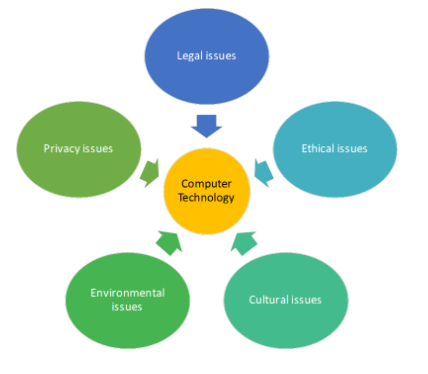
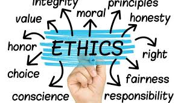
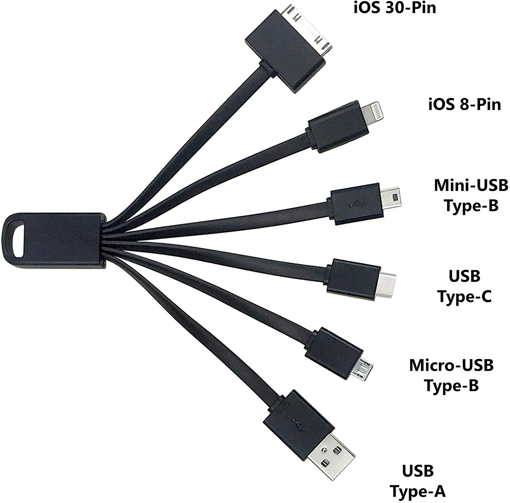

An Intro to: Ethics, legal, cultural and environmental concerns

Ethics

Ethics is more to do with what is morally right or wrong, not lawful
A populations morals change often
Laws are often slow to catch up
Some ethical dilemas in Tech
Should the internet be regulated or should we have complete freedom?
And should there be Government control or should corporations police themselves?
The rise of AI: Will they like us? What if they don't? Should you be aloud to lawfully kill AI?
Autonomous vehicles who's at fault for an accident? Boeing 737 max; the Uber crash in Arizona
Smart devices are always listening or know where you are...
Who controls that data?
And what will they do
with it?
Ethical issues affecting Computers and their use

- Who watches the watcher?
Censorship and Surveillance
- Internet of everything
Social Well-being
- Sale of your data
Was it gained legal or illegal; What privacy do you have?
- Different stakeholders have different interests
Who's interests take priority?
- How many followers do you have?
Social Media - Cyberbullying and Trolling
- Health
Mental and physical
Legal
- Copyright Design and Patents Act 1988
Protection of an individual or a companies intelectual property
- Computer Misuse Act 1990
Tries to stop Hacking or Cyber crime
- The Data Protection Act 1998
Who owns your data?
How is it protected/processed?
- Freedom of Information Act 2000
What data does an organisation/government have on you?
Find out information from the government
- Licensing
Creative commons licenses
open source vs proprietary software
International Laws- Like the US "Fair use" doctrine
Which of these is the newest law and how long ago was that?
Cultural
Technology makes the world smaller that can mean that cultures are changing.
My Family is international!
Would that have
happened 20/30/40 years ago?
In the Middle East they worry about Westernism removing their culture and at the same time the Arab spring
is about people desperately wanting to be more westernised.
In-equal development of countries, are more developed countries leaving those less developed behind? or can
they catch up through technology?.
There is a proven trend towards the culture of the people that make the applications. Why would an American
developer care about Korean culture?
China limits what is seen or shared. It says to protect its culture, is that true?
Environmental Concerns
- Recycling and disposal
How are the disposed of?
Where are the sent?
Can it be reused?
- Globalisation
Where is it made?
Where do the natural resources come from?
Carbon footprint and energy used to make or deliver?
- New tech vs old tech
Right to repair
Manufactured to fail or lower standard as will be replaced soon
- Demand on environment for natural resources
Deforestation
strip mining
Exploitation of Undeveloped Countires - e.g. Cobalt mining in Congo
Discussion of recent events
These are events that happened just last week:
NSA and Microsoft
NSA is the American spy agency, like our GCHQ.
It listens to all communications especially the internet.
The US government agency stepped in to make Microsoft aware of a potential exploit in Windows
10
China? Huawei?
EU and USB Type-C

The EU are trying to fix the problem of multiple types of chargers by picking a standard the USB
Type-C
Does this prevent innovation?
E.g. propellers vs jet engines
Xenobots
Xenobots are 1mm wide living machines.
Made from african frog DNA fully programable and can deliver
payloads with the
body,
e.g. drugs
or other things....
Could this be the cause of the mystery Chinese virus???